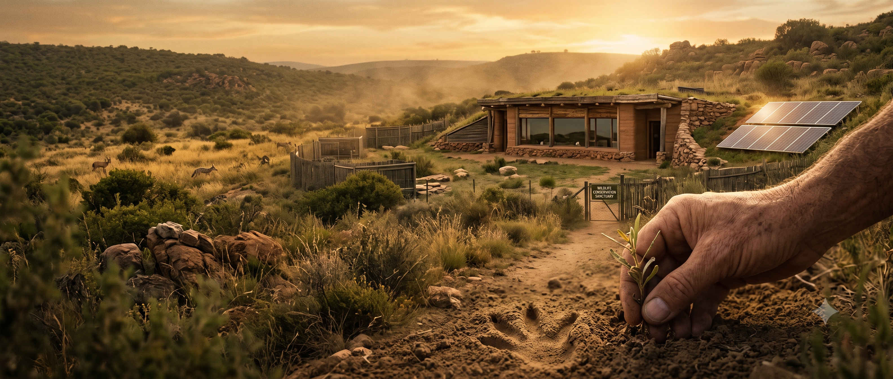

El impacto de los domésticos en la fauna local
Los perros y gatos en situación de calle o semi-libertad poseen instintos de depredación que pueden cazar y desplazar a la fauna nativa, alterando de forma drástica el equilibrio natural de la región.
La ecología estudia cómo interactúan los seres vivos con su entorno. Mantener una mascota en casa —ya sea un perro, un gato o un animal exótico— no es un acto aislado: tiene un impacto directo sobre la biodiversidad y el delicado equilibrio de nuestros ecosistemas silvestres.
En Wild Project creemos que la responsabilidad ambiental y el amor por los animales deben ir siempre de la mano. Por eso educamos a cada adoptante sobre las implicancias ecológicas de su elección.

Lo que necesitás saber sobre la relación entre mascotas y naturaleza.
Los perros y gatos en situación de calle o semi-libertad poseen instintos de depredación que pueden cazar y desplazar a la fauna nativa, alterando de forma drástica el equilibrio natural de la región.
Liberar un reptil, ave o mamífero exótico cuando ya no se puede cuidar propicia la creación de especies invasoras que colapsan los hábitats locales, causando un daño ambiental irreversible.
Al adoptar y esterilizar responsablemente, frenamos la sobrepoblación callejera y protegemos indirectamente los refugios y espacios de la vida silvestre. Adoptás y también cuidás el planeta.
La gestión de residuos de mascotas impacta en las cuencas hídricas. Los residuos fecales no tratados contaminan napas freáticas y ecosistemas acuáticos, afectando la fauna local.
En áreas periurbanas, las mascotas sin control pueden invadir territorios de fauna silvestre, transmitir enfermedades y alterar los corredores biológicos necesarios para la biodiversidad.
La producción de alimentos para mascotas tiene una huella ambiental significativa. Elegir marcas sostenibles y evitar el desperdicio contribuye a reducir el impacto climático de la tenencia de animales.
Respuestas a las dudas más comunes sobre tenencia responsable y medio ambiente.
Cada acción cuenta: adoptá, difundí, educá y colaborá. Juntos podemos construir un mundo más equilibrado para los animales y la naturaleza.
Quiero colaborar